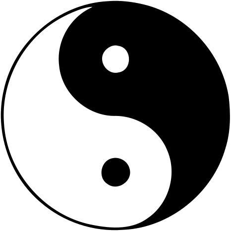

Theme song: Brisa del Disierto by Los Natos
About meYou walk by the park and spot a mysterious figure off in the distance practicing Tai Chi in the fading light of the afternoon. Though this unexpected sight is not entirely unusual, their unbreakable focus and fluidity captures your full attention. People performing Tai Chi have a way of blending in with the landscape. They capture our imagination, and on some level, grant us a rare glimpse of peace. Sure, it's nice when you can practice and fully express your Tai Chi forms out in the open, in a charming, beautiful place, BUT if you don't have access to those places, that's ok too. Sometimes all you have is the alley behind the steakhouse where you bartend. Perhaps the 10 x 10 ft cold, concrete space of your laundry room is the only place to unleash the full power of Lao Jia Erlu (cannon fist). If dandelions still bloom through the sidewalk cracks you can always find a Tai Chi corner.
I have to confess that tapping into this ancient art has been a game changer for my overall physical, mental, and even spiritual well-being. Tai Chi is a superior activity for physical recovery. Many of the movements and forms cultivate an increased mobility, balance, agility, and general body control. In fact there are a number of Tai chi exercises that are excellent for improving proprioception (which is your body's awareness of itself when coordinating movement.) It's an everyday phenomenon that we take for granted. Tai Chi is especially well suited as a form of moving meditation, especially if you're like me and can't just sit still with your legs crossed and empty our minds no matter how many French Vanilla scented candles we've lit. Look, there's nothing wrong with taking a moment out of your day to focus your thoughts or even escape them and Tai Chi is up for the task.
Alright, you've you've found the perfect time and picked out the perfect spot to practice Tai Chi. So now what do you practice? I mean where do you even start? That's what I'm here for my friends. I recommend rather than tackling a traditional form head-on, focus on the fundamental movements of those sequences. If you were learning to speak Chinese you wouldn't just recite random sentences you've memorized in whatever accent "just feels right." You need to learn what each word means and how to properly pronounce them. In a sense, you're trying to teach your body to speak Tai Chi Chuan. So now, I would like to share with you a few examples of the kind of exercises you can practice. Each exercise is derived from an original form. They are essentially phrases to aide in your fluency of Tai chi.
Here's a wonderful demonstration of my favorite form to practice.
But of course, there is a far more popular form from the Yang style which is often the form most people are accustomed to seeing and with good reason, it's absolutely elegant. Here's Yang 24
Here are a few wonderful exercises performed by my favorite YouTube master - JianFeng Chen
Yun Shao or "cloud hands" is one of those movements you could focus an entire day's session on and it wouldn't be a waisted day.